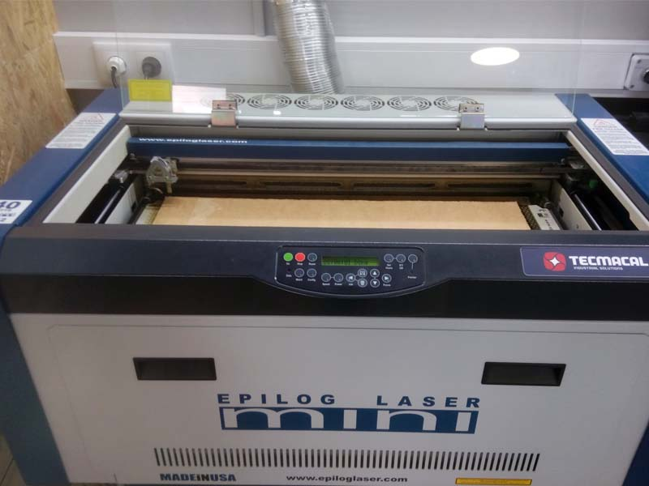
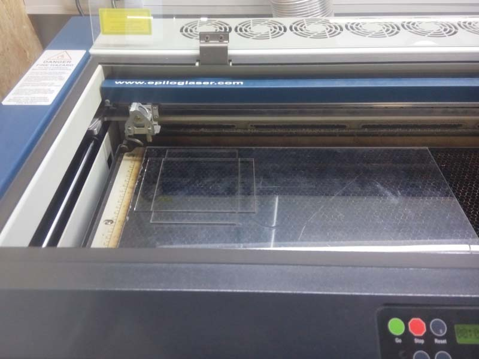
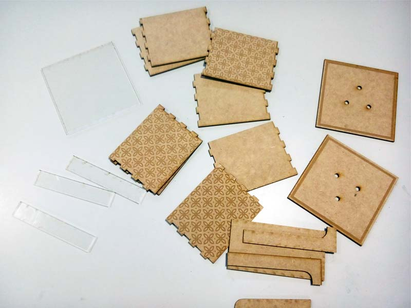

lasercutter . individual


In the previous week I drew the 3D drawing of the box that I would like to use for my project.
This week, I started by exporting the 3D Design from Rhinoceros 3D to Adobe Illustrator, where all the planning of my drawing became 2D, vectorial and editable.
After having my planning with the measurements, I started with the CorelDraw program to be able to print on the lasercutting machine.
On CorelDraw it was necessary to:
Before starting to cut, I decided to do a few small tests on the material first (figure on the right) to understand the parameters of speed and power needed to cut each type of material.
lasercutter . process




For my first tests of my box design, I decided to include three types of materials:
To cut the wood I used for as:
- Vetor Setting:
- Speed: 10%
- Power: 40%
- Freq: 500 Hz
- Raster Setting:
- Speed: 100%
- Power: 20%
To cut the MDF wood I used for as:
- Vetor Setting:
- Speed: 12%
- Power: 100%
- Freq: 500 Hz
- Raster Setting:
- Speed: 60%
- Power: 60%
To cut the acrylic I used for as:
- Vetor Setting:
- Speed: 10%
- Power: 100%
- Freq: 5000 Hz
In the images, we can see the results of my tests.
The cuts and the fittings were fine, and the pieces fit perfectly to assembly the box. I used white glue to help fix the pieces:)